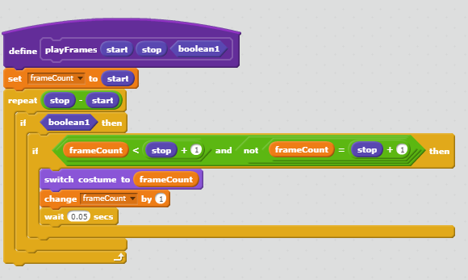
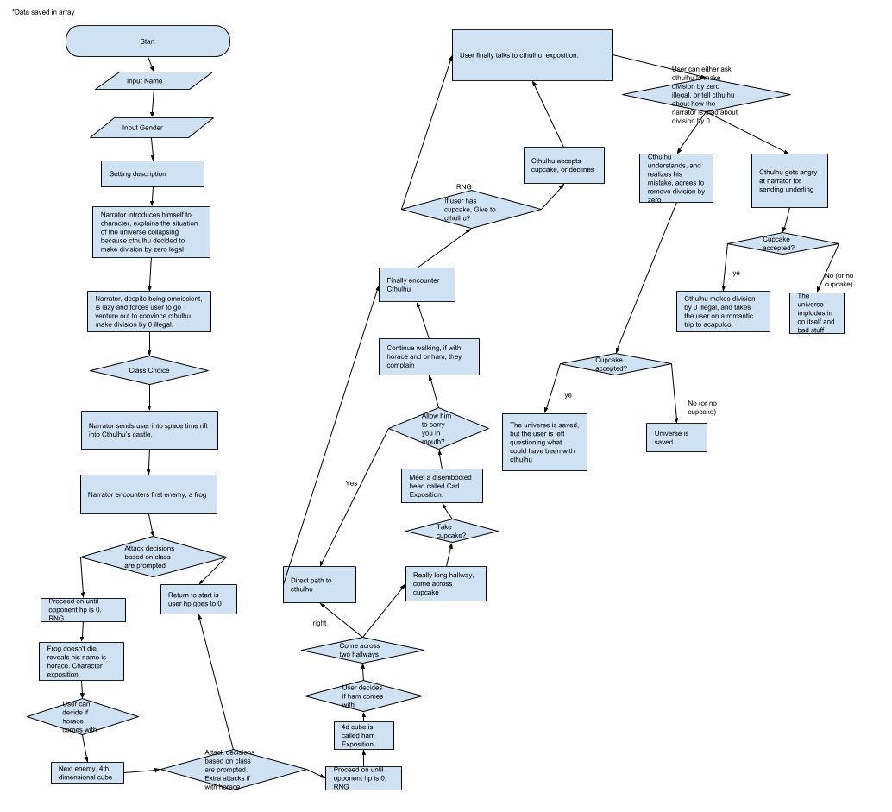

If that doesnt work, here's the link: Linky
This was supposed to be a fighting game, similar to smash, but I ran out of time and now it's a fight until death kind of game. I made this as a joke, as a result of the internet meme phenomenon of "chads" and I stuck with it.
The spawning location of the star, the damage the player deals and recieves, and the health of the enemies are randomized.
The score keeping, as displayed in the left corner, is an indication of the difficulty. As the score increases, the time interval of attacks get shorter, and the damage increases.
Eventually when the player runs out of health, the user is given a death screen to signify that the game is over.
Well, this game was created for a required project, but I chose this fighting style because it's what I'm familiar with and its what I enjoy
I suppose the addition of abilities was something that I'm quite happy with, as abilities add extra flair. Another positive thing was the addition of an energy system that limits the use of abilities
Right off the bat, I could see that Scratch has some problems with parallel computing. Sometimes, if there are too many blocks that react to the same event, some blocs simply won't run. Additionally, it was quite annoying to have to create public variables for sprites, because I wouldn't be able to access the health variable for a particular sprite with a method.
If I had more than a couple of days, I would have cleared up all of the bugs in the animation, I would have added a leveling sysytem, more stages, and more enemies. Overall, the game is quite buggy and not all that fun, but with time it could potentially resemble a playable game.
There are certainly mainy algorithms that were used to create this game, the most noteable being the frame animation algorithm.
While this algorithm was initially going to play until a stop condition, it was easier to simply cycle through all of the frames and stop this algorithm when a button was not clicked. The frame count keeps track of the frame that is currently being played, the boolean acts as the stopping condition, and the start and stop parameters indicate the starting and stopping frames.
The reader is made aware of a spacetime catastrophe by a rude narrator who forces the reader to become directly involved in the story. The reader then goes on an "adventure" to talk to the dark lord cthulhu, makes a series of decisions, and meets a few "interesting" characters, all the while an annoying narrator recounts events in the reader's head.
The incremental and iterative development process of my program was relatively straight forward.
I initially began working on the project chunk by chunk, testing individual functions and immediate
error checking. I then realized how slow that process was, and decided to begin implementing functions
that could be called over and over again, as well as running the functions individually. For example,
I wanted for the program to have a fighting mechanic, but establishing a complex scene of fighting for
each enemy would be a waste of space. I simply created a function that takes in the difficulty and name
of an enemy, and outputs a series of texts and attacks. I probably could have gone a step further in
reducing redundant lines, but my deadline was approaching and I needed to make sure everything functioned
as intended.
Each of the functions have relatively straightforward names that somewhat describe what they do.
An outsider reading the could will know what the code will do, but not how it will do it. Additionally,
these functions are called in such a way that they perform desired tasks. Because of the organization of
these functions and the purpose of these functions, the arrangement of my story is a form of procedural
abstraction. This allows me to test individual parts without having to run the entire story through, which
allows for faster debugging.
A story I remember liking was called The Boy’s Sacrifice. I didn’t get to read very many stories,
so there may have been others that I would have enjoyed more, but out of the ones I read, this story was
memorable. I think the most memorable aspect was the narrator questioning my decisions by repeatedly asking,
“ARE YOU SURE?”, which interested me.